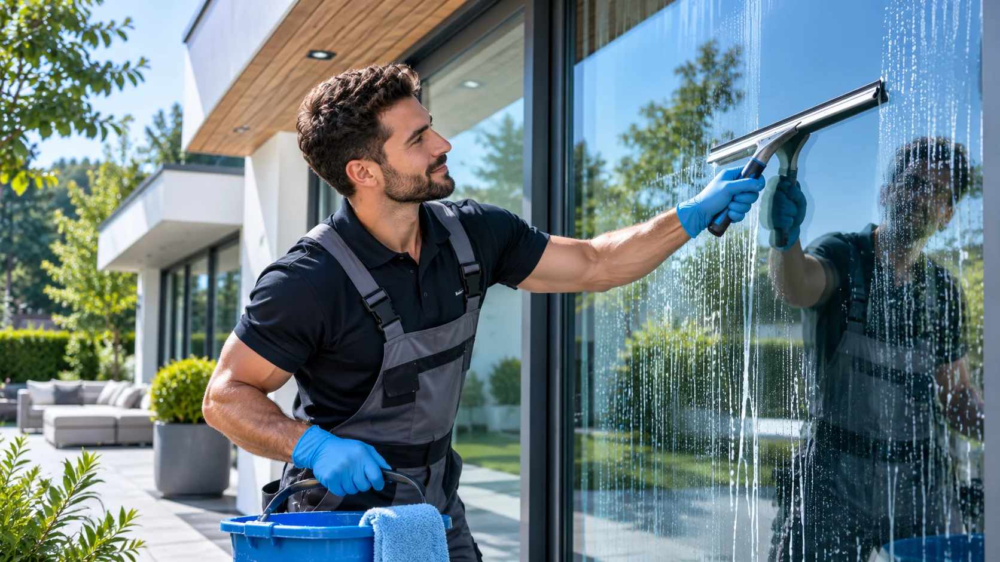
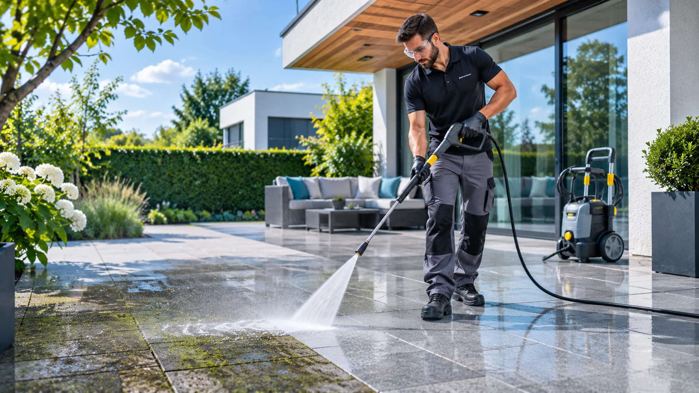
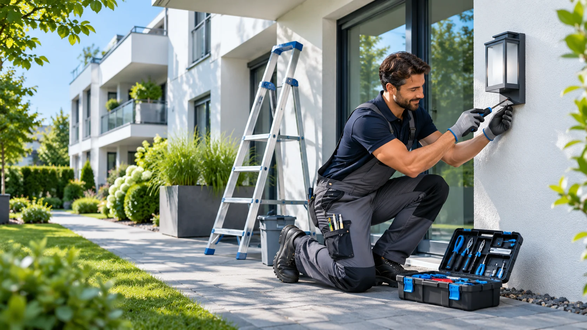

ALLES
RUND UMS
HAUS.
Eine Adresse. Viele Lösungen. Sitz in Regenstauf.
Unterhaltsreinigung, Gartenarbeit, Entrümpelung, Fensterreinigung, Terrassen- und Steinreinigung, Hausmeisterservice oder Umzug: Wir unterstützen Sie bei Aufgaben rund um Ihr Zuhause und Ihre Immobilie.

HAUSTÜR BIS
ZUM GARTEN↗
WIR PACKEN
ES AN.
Sieben Leistungen aus einer Hand – finden Sie den passenden Service und öffnen Sie ihn mit nur einem Klick.
 01UNTERHALTS-
01UNTERHALTS-REINIGUNG↗
 02GARTENARBEIT↗03ENTRÜMPELUNG↗
02GARTENARBEIT↗03ENTRÜMPELUNG↗
04FENSTER-REINIGUNG↗

05TERRASSEN- &STEINREINIGUNG↗

06HAUSMEISTER-SERVICE↗
 07UMZUG↗IM FOKUS / 01
07UMZUG↗IM FOKUS / 01SAUBER.
BIS INS DETAIL.
Regelmäßige und individuelle Reinigung für Büros, Treppenhäuser, Praxis- und Kanzleiräume sowie private Haushalte.
Unterhaltsreinigung anfragenMehr über Unterhaltsreinigung erfahrenIM FOKUS / 02MEHR GRÜN.
MEHR ZEIT.
Vom gepflegten Garten bis zu einladenden Außenflächen – wir sprechen über Ihre Wünsche und die passende Unterstützung.
Gartenarbeit anfragenMehr über Gartenarbeit erfahrenPLATZ FÜR
NEUES.
Keller, Dachboden oder größere Räumung: Sie sagen uns, was weg soll – wir besprechen das passende Vorgehen.
Entrümpelung anfragenMehr über Entrümpelung erfahrenKLARE SICHT.
SAUBERE GLÄSER.
Glas- und Rahmenreinigung für Privat- und Gewerbeobjekte. Wir besprechen Art, Umfang und Wunschtermin mit Ihnen.
Fensterreinigung anfragen Mehr über Fensterreinigung erfahrenFRISCHER LOOK.
SAUBERE FLÄCHEN.
Pflege von Terrassen, Einfahrten, Gehwegen und Pflasterflächen. Wir besprechen Art, Umfang und Wunschtermin mit Ihnen.
Terrassen- & Steinreinigung anfragen Mehr über Terrassen- & Steinreinigung erfahrenGUT BETREUT.
RUND UMS HAUS.
Regelmäßige Objektbetreuung und kleine Arbeiten rund ums Gebäude. Wir besprechen Art, Umfang und Wunschtermin mit Ihnen.
Hausmeisterservice anfragen Mehr über Hausmeisterservice erfahrenIM FOKUS / 07ALTES LOS.
NEUES REIN.
Bei einem Umzug gibt es viel zu organisieren. Erzählen Sie uns, wobei Sie Hilfe brauchen und wie Ihr Zeitplan aussieht.
Umzug anfragenMehr über Umzug erfahrenWENIGER
AUFWAND.
MEHR LUFT.
Rund ums Haus bedeutet: verschiedene Aufgaben, ein direkter Kontakt. Wir klären gemeinsam Ihren Bedarf und stimmen die nächsten Schritte persönlich ab.
Jetzt Kontakt aufnehmenANFRAGE
Rufen Sie uns an oder schildern Sie Ihr Vorhaben per E-Mail.
ABSPRACHE
Wir besprechen Leistung, Umfang und mögliche Termine.
UMSETZUNG
Nach Vereinbarung geht es los – passend zu Ihrem Bedarf.
EINFACH ANFRAGEN. PERSÖNLICH KLÄREN. LOSLEGEN.
FRAGEN?
KLAREN WIR.
Damit Sie wissen, wie die Zusammenarbeit mit uns abläuft.
Frage stellenWelche Leistungen bieten Sie an?+
Wir bieten Unterhaltsreinigung, Gartenarbeit, Entrümpelung, Fensterreinigung, Terrassen- und Steinreinigung, Hausmeisterservice und Umzug an. Umfang und Verfügbarkeit stimmen wir individuell ab.
Kann ich mehrere Leistungen kombinieren?+
Ja, beschreiben Sie uns einfach alle gewünschten Aufgaben. Wir klären, was wir gemeinsam organisieren können.
Wie erhalte ich ein Angebot?+
Am besten teilen Sie uns die gewünschte Leistung, den Ort und den ungefähren Umfang telefonisch oder per E-Mail mit.
Welche Orte bedienen Sie?+
Nennen Sie uns Ihren Ort oder die Postleitzahl. Wir prüfen gerne, ob Ihr Standort zum Einsatzgebiet gehört.
Kann ich einen Wunschtermin nennen?+
Selbstverständlich. Ob der Termin möglich ist, klären wir nach Absprache und Verfügbarkeit.
LASSEN
WIR'S AN-
PACKEN.
Ein Anruf oder eine Nachricht genügt, um den nächsten Schritt zu besprechen.
WAS KÖNNEN WIR
FÜR SIE TUN?
Dieses Formular bereitet eine Nachricht für Ihr E-Mail-Programm vor.